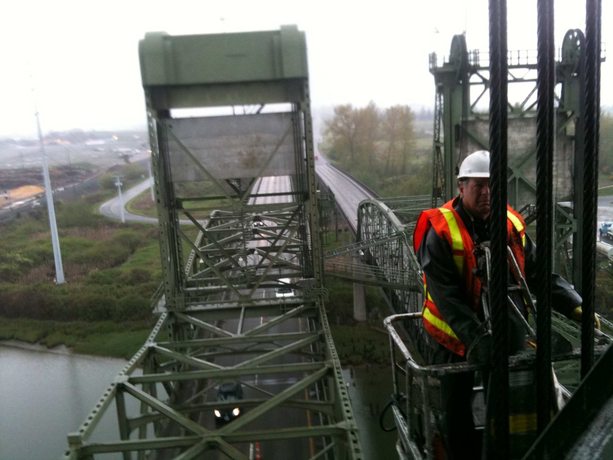
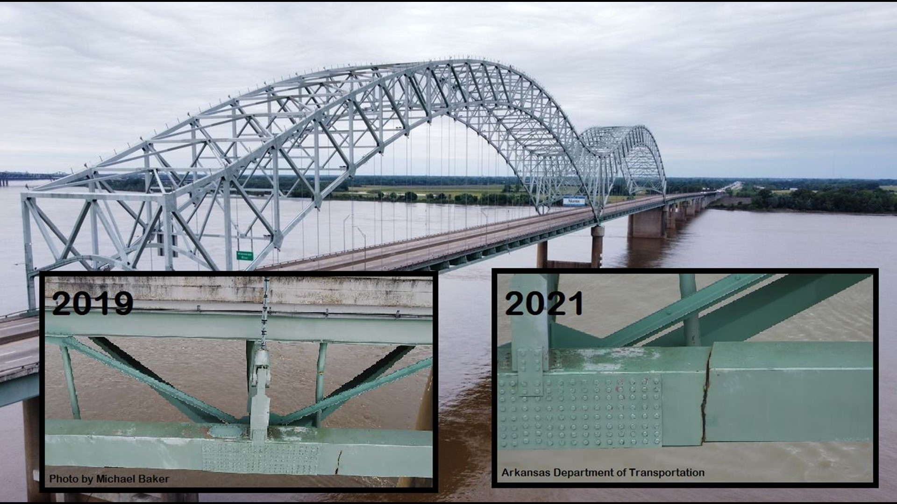
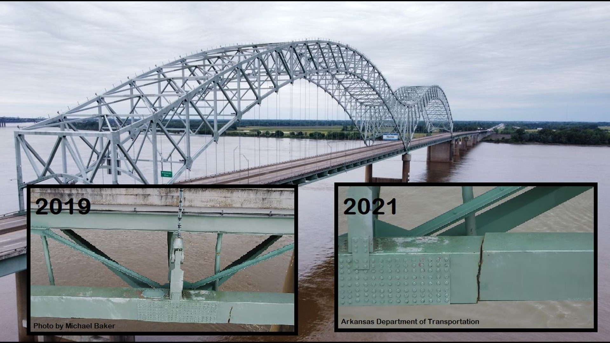

Problem
Inspection
Every bridge in the USA must be inspected every two years by a licensed professional engineer.
But even the most thorough bridge inspection is blind to structural overloading and damage on the 99.9% of days that inspectors are not onsite.
Incidents to Avert
Examples of recent incidents that monitoring could have averted include the I-40 Hernando de Soto Bridge in 2021 and the Fern Hollow Bridge in 2022. These bridges cost tens of millions of dollars to repair. But, when considering trucking delays, detours, and disruption to the local economy, these incidents each cost society into the hundreds of millions of dollars.
 
